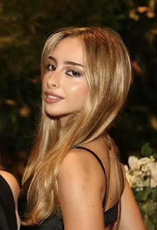

About me
Art has been part of my life for as long as I can remember, but I began taking it seriously at 13. What started as a passion slowly became a way of expressing emotions, preserving memories, and connecting with people. In 2021, I completed a 96-hour course in Artistic Design in São Paulo, Brazil, and in 2025 I moved to Dublin to attend university, bringing my art with me into a completely new chapter of my life. Today, much of my work is commission-based, especially pieces with personal meaning for the person receiving them. I love turning a photograph, a memory, or the feeling someone has for a loved one into something they can keep and see every day, whether it's a family portrait, a beloved pet, a special place, or a moment worth remembering. For me, the most rewarding part isn't just creating a realistic drawing; it's knowing the finished piece means something to someone.
I mainly work with pencil, ballpoint pen, and charcoal, using realistic techniques to capture the small details and expressions that make a subject feel familiar and alive. I also love oil painting and am always open to experimenting with new materials and approaches, because I don't believe art should be limited to one style or subject. I make art because I love making people happy, and there is something special about seeing someone's reaction to a piece that reminds them of someone or something they love. Whether you have a very specific idea or something completely different in mind, I want my art to be for everyone, so I'd love to hear your story and turn a meaningful memory into a piece you can keep forever.

See commissions